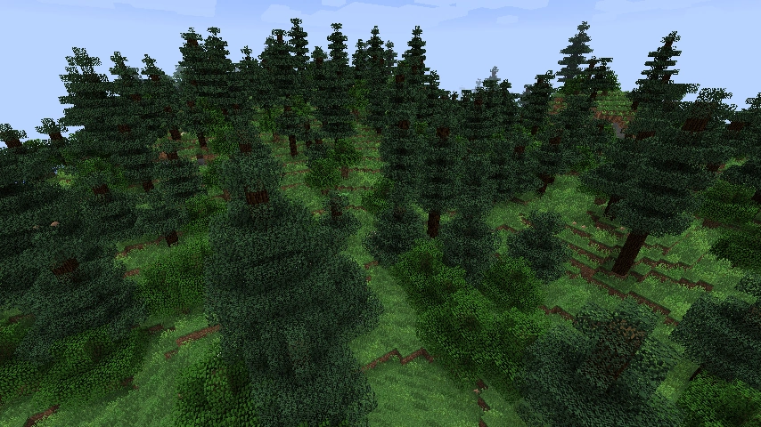
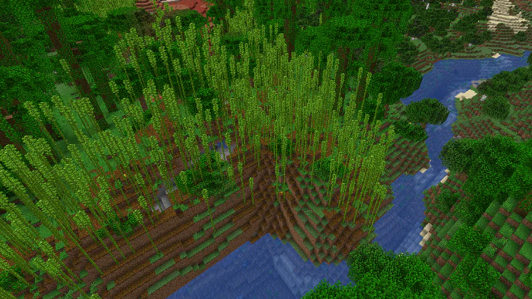
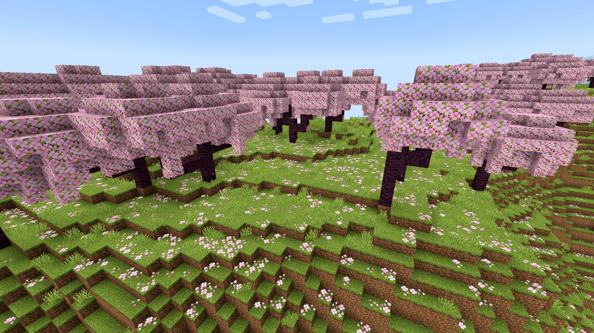
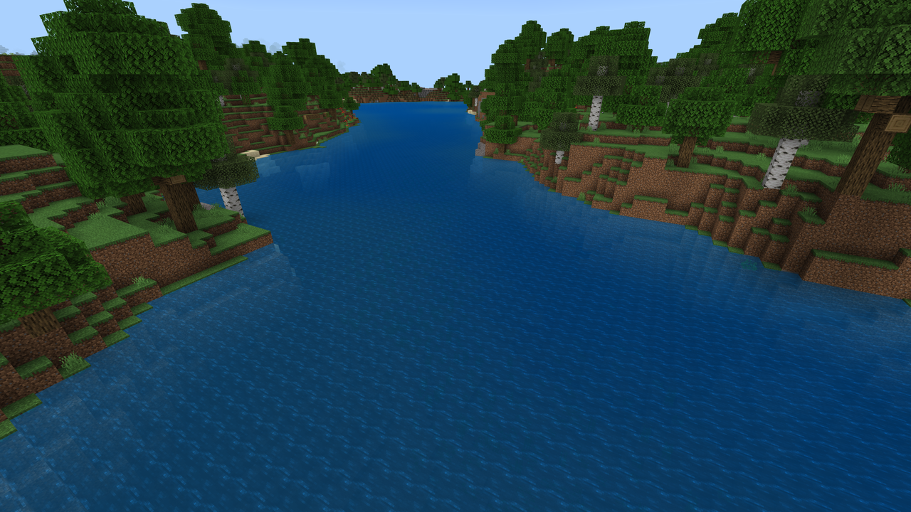
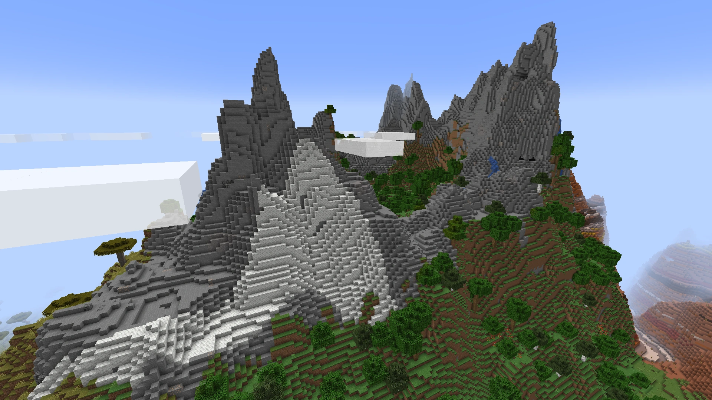
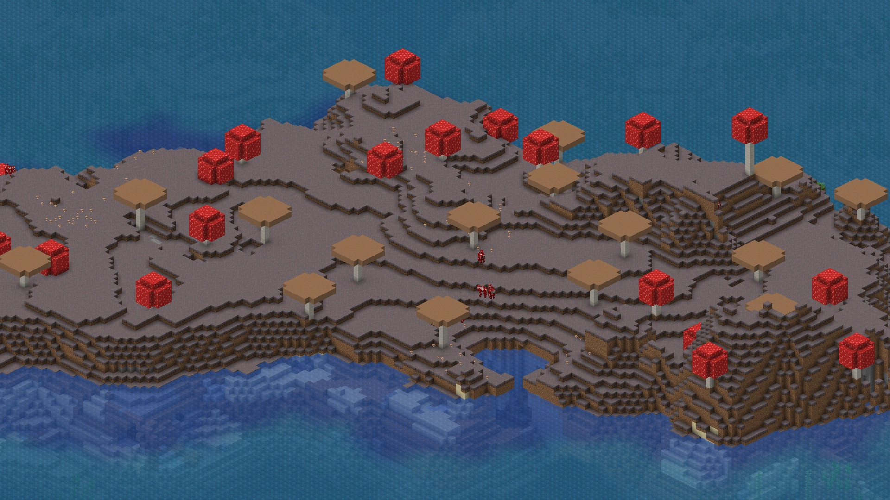
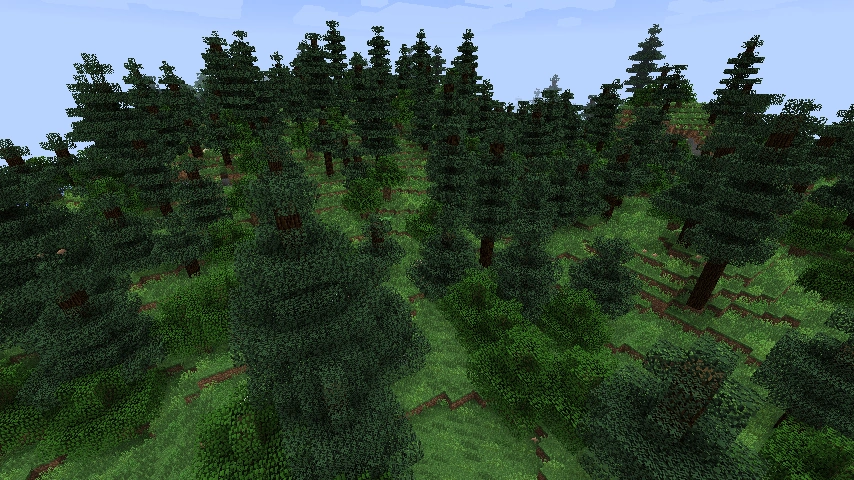
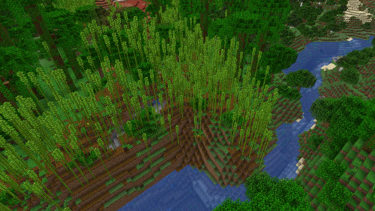
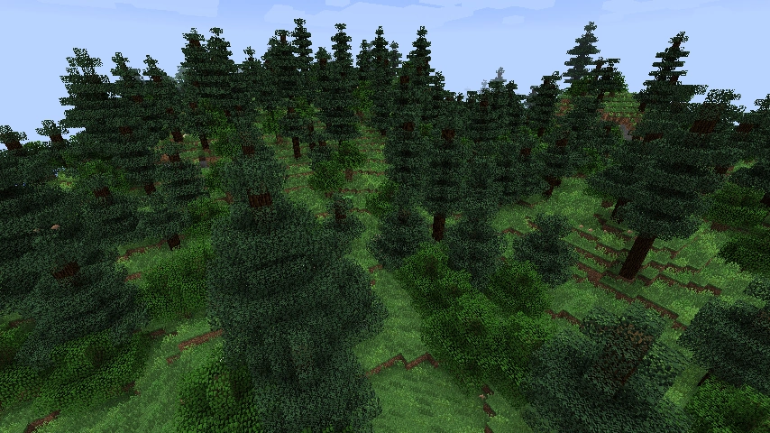
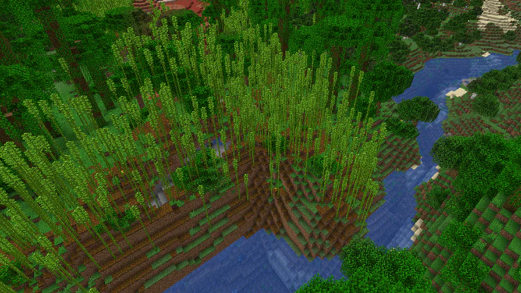

The Overworld is a boundless realm filled with opportunities for exploration, resource gathering, and
creativity. With diverse biomes and hidden treasures, it challenges players to survive, build, and embark on endless
adventures. Check out some of our favourites:
Click and Drag to see more....


Forest Biomes
Bamboo Forest
These forests are filled with tall bamboo stalks and create a lush, green landscape. Pandas exclusively spawn
here.
Mangrove Forest
A swampy biome with sprawling mangrove trees and frogs!
Dark Oak Forest
A dense biome filled with large, dark oak trees, massive mushrooms and thick canopies. Often home to woodland
mansions.
Jungle
A lush, dense type of forest with tall trees and vines. Home to ocelots, parrots, and pandas. Contains jungle
temples and cocoa beans.
Acacia Forest
Found in savannas, featuring unique, umbrella-shaped acacia trees.
Cherry Grove
A japanese cherry blossom dominated biome featuring featuring a huge amount of pink.
Birch Forest
A light forest filled with birch trees. Has a variation called Old Growth Birch which features trees 3 times
taller than usual.
Spruce Forest
A dense forest of spruce trees. A good place to find mushrooms.

Water Biomes
Oceans
Vast bodies of water with unique creatures like dolphins, turtles, and various fish. Ocean biomes often contain
coral reefs, shipwrecks, and underwater ruins.
Rivers
Winding water bodies that cut through various biomes. Ideal for fishing and transportation.
Swamps
Murky waters with lily pads, vines, and witch huts. Slimes and witches are common here.

Mountain Biomes
Stony Peaks
High altitude terrain with steep cliffs and scenic views. Goats and emerald ore are commonly found here.
Frozen Peaks
Characterised by tall, snowy mountains and ice spikes. These areas are challenging to navigate due to the large
amounts of powdered snow and packed ice.

Open Biomes
Plains
Flat, grassy areas perfect for building. They are home to many passive mobs such as horses, cows, and sheep, as
well
as flowers and other decorative items.
Mushroom Islands
A rare biome with giant mushrooms and unique mooshroom cows. Hostile mobs do not spawn here no matter the
difficulty, making it a peaceful area.
Badlands
Also known as the Mesa Biome, this biome has colourful, layered clay and terracotta formations. Gold ore is
extremely abundant in this biome.

Cave Biomes
Dripstone Cave
Large open underground areas, characterised by stalactites and stalagmites.
Lush Cave
A vibrant underground ecosystem filled with greenery, glow berries, and axolotls.
Deep Dark
The most dangerous biome. Dark, eerie, and home to the terrifying Warden. Contains ancient cities, which contain
valuable loot.


 



.webp)
.webp)